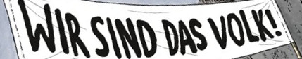
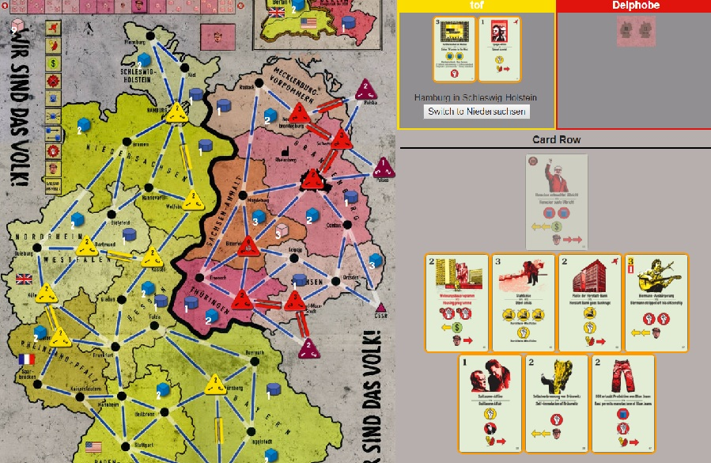
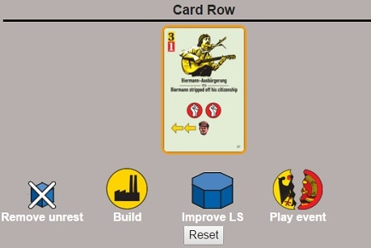
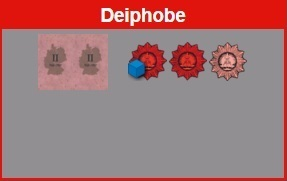
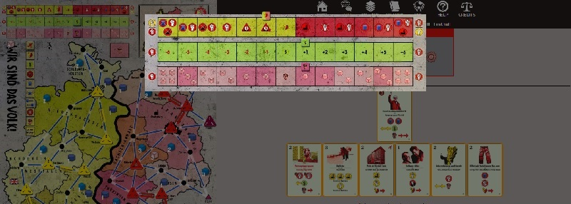

Welcome to this short help page. You can find the rules here. You can go to the boardgamegeek page if you want to discuss about the game.
For any matters related to this website and this implementation, please contact me.

Click on the highlighted cards to choose your card.

Click on the chosen action to perform this action.
Nothing really new here. Please note that the history button allows you to view the full history (scroll down). The bug button allows you to send a message to the admin. It also saves the game as it is now, for further investigations. Once you received a popup window indicating that your entry is created, you can go on with your game, if you can and want to.

East can click the free police icons anytime during her/his turn to use the police action.

Click on the 3 tracks at the top of the board in order to magnify it.